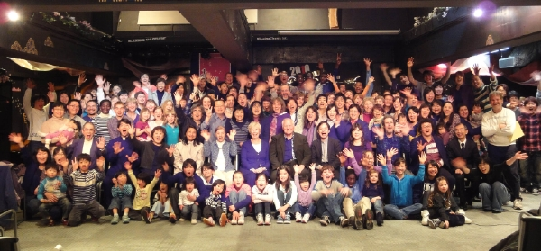

about YWAM
Youth With A Mission (YWAM) is an interdenominational, international mission organization. To accomplish the Great Commission (Matthew 28:19), we primarily engage in Evangelism, Training, and Mercy Ministry.
We currently operate in over 1,000 locations in more than 180 countries with a staff of over 18,000. All staff are volunteer workers. In Japan we have YWAM teams in Tokyo, Osaka, Nagano, Shizuoka, Kagoshima, and Okinawa. Our ministries include Discipleship Training School (DTS), church planting, supporting and partnering with local churches, and more.
We believe that God is calling His people to "go and make disciples of all nations, baptizing them in the name of the Father and of the Son and of the holy Spirit, and teaching them to obey everything I have commanded you" (Matthew 28:19-20). God is calling people from many countries to bring the Gospel of Jesus Christ to Japanese people and to raise up the Japanese people for His glory and honor and give them His gifts to spread the gospel in various ways.
Youth With A Mission (YWAM) Japan began in Osaka in 1975. Later, teams expanded into Okinawa, Tokyo, and Kyushu. Currently, YWAM Japan's National Office is located in Tokyo. Our YWAM Japan's ministries focus on Training, Evangelism (including church planting), and Mercy Ministries.


From the Chairman of
YWAM Japan
"Go into all the world and preach the good news to all creation." (Mark 16:15)
This scripture is a key Bible verse for us. God made a very simple mission for all believers: To go into all the world for the purpose of telling the Gospel (Evangelism), to make disciples of all nations (Training), and to reach out to the needy (Mercy Ministry). These principles guide us as we seek to complete this important mission through praying and taking action.
Japan has been receiving many spiritual blessing and much grace from other countries. It is now Japan's turn to become a giver. I believe that Japan will become a nation that can richly bless other Asian countries and the rest of the world. We in YWAM Japan commit our lives and our service to pursuing this purpose.